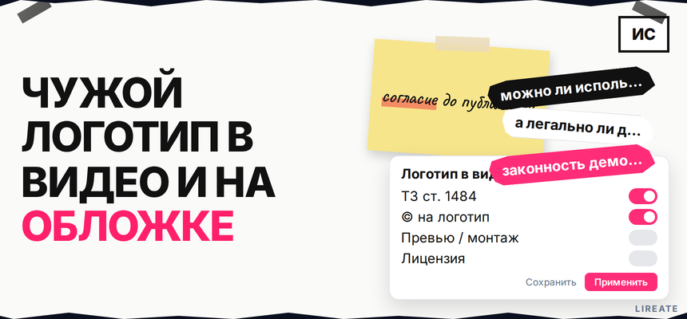
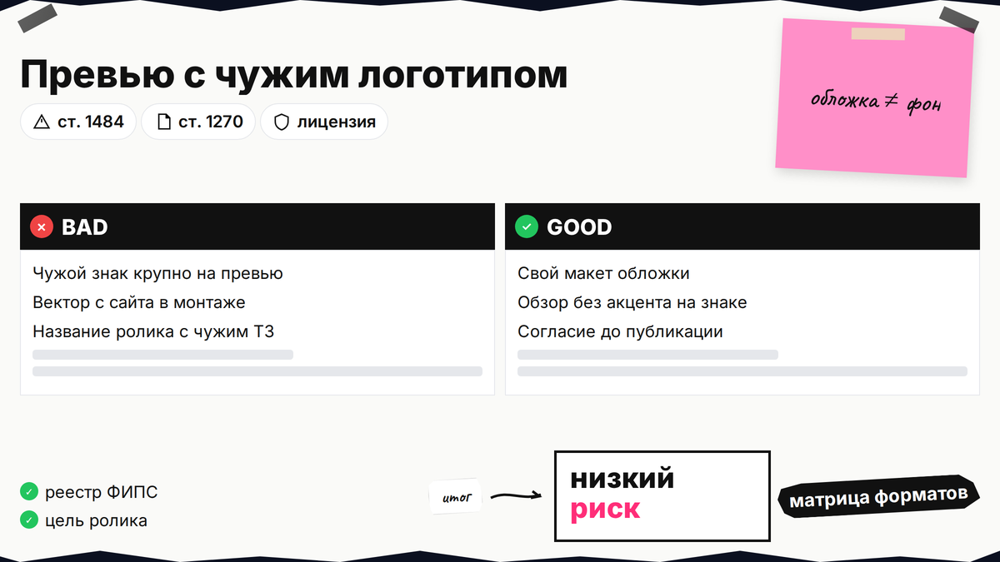
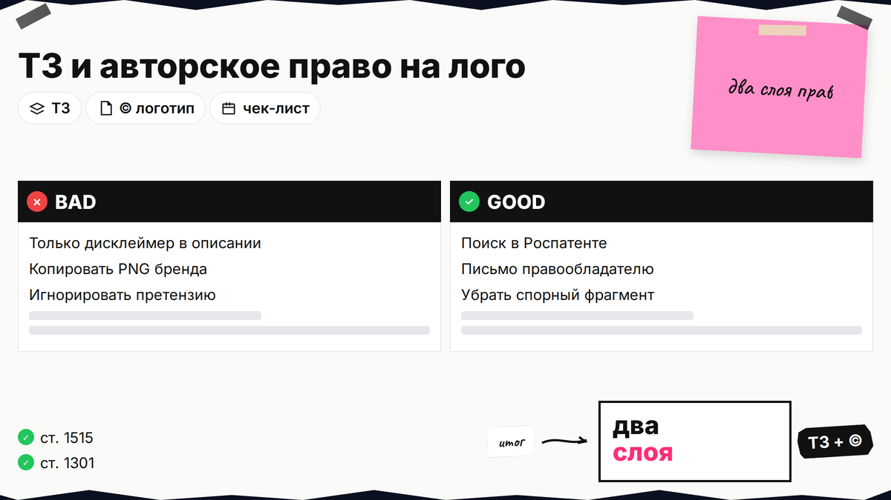

Вы монтируете ролик или делаете обложку для YouTube, Rutube или соцсетей, и в кадре оказываются чужие логотипы, эмблемы авто или бренды на упаковке. Вопрос "можно ли использовать логотипы компаний в видео" упирается не в "красиво или нет", а в два слоя прав: товарный знак в Роспатенте и авторское право на графический логотип. Ниже вы разделите форматы (превью, монтаж, обзор, реклама), пройдёте чек-лист по ГК РФ и поймёте, когда без письменного согласия риск претензии высокий.

TL;DR / Быстрый инсайт: Товарный знак (ст. 1484 ГК РФ) запрещает использовать чужое обозначение без согласия правообладателя в пределах охраны. Логотип как картинка - произведение: воспроизведение в ролике это ст. 1270. Крупный чужой логотип на обложке или в рекламном кадре почти всегда требует согласия. Фоновый кадр без акцента на знаке риск снижает, но не обнуляет. Перед публикацией проверьте знак в Поисковой платформе и зафиксируйте цель ролика.
Запросы вроде "а легально ли делать такие обложки к видео" и "демонстрация эмблем авто в роликах" относятся к одной задаче: вы используете чужое обозначение так, что зритель его узнаёт. Площадка может пропустить загрузку, но правообладатель смотрит на суть использования, а не на модерацию хостинга.

Товарный знак - зарегистрированное в Роспатенте обозначение для товаров и услуг определённых классов МКТУ. Логотип может быть и ТЗ, и отдельным графическим произведением с автором-дизайнером. Незарегистрированное имя на упаковке не даёт монополии как ТЗ, но уникальный рисунок логотипа всё равно охраняется как произведение (ст. 1259).
| Объект | Что защищает | Типичный спор в видео |
|---|---|---|
| Товарный знак | Слово, комбинация, 3D-форма в реестре | Крупный логотип на превью, реклама "как у бренда X" |
| Авторский логотип | Графика, шрифт, композиция знака | Скрин или вектор чужого файла в монтаже |
| Правила площадки | Модерация, жалобы, монетизация | Страйк или блок без суда - отдельно от ГК РФ |
Делайте: записывать, зачем знак в кадре (обзор, новость, реклама). Не делайте: считать, что "в интернете уже есть этот логотип" равно свободное использование.

Риск зависит от того, становится ли чужой знак главным элементом кадра и связан ли ролик с вашими продажами.
| Формат | Пример | Риск по ТЗ / © | Что сделать |
|---|---|---|---|
| Обложка / превью | Чужой логотип крупно на заставке | Высокий | Свой макет, размытие, лицензия или отказ от знака |
| Реклама услуг | Баннер с чужим брендом "мы как X" | Высокий | См. гайд по бренду в рекламе |
| Обзор / распаковка | Товар с оригинальной маркировкой в кадре | Средний | Достоверный обзор, без подмены происхождения; документы на товар |
| Фон | Вывеска на улице, бутылка в руке без акцента | Ниже, но не нулевой | Не крупный план знака, не в заголовке ролика |
| Эмблема авто | Значок на машине в сюжете | Зависит от акцента | Не использовать эмблему как свой бренд в названии канала |
Схема: цель ролика → строка матрицы → правки монтажа → проверка названия и превью → публикация или запрос согласия
Делайте: убирать крупные логотипы с превью, если нет лицензии. Не делайте: ставить чужой знак в title ролика для кликов без прав на обозначение.
Цитирование по ст. 1274 допустимо при соблюдении условий (объём, цель, указание автора и источника), но на практике спорные превью и рекламные вставки под это редко подходят. Не подменяйте цитирование полноэкранным логотипом на обложке.
Делайте: отдельно согласовывать ТЗ и дизайн логотипа, если заказываете похожий знак - см. договор с дизайнером. Не делайте: копировать вектор с чужого сайта в свой шаблон превью.
Помимо картинки проверьте музыку, стоковые вставки и текст описания. Чужой товарный знак в названии ролика при вашей коммерческой деятельности в той же сфере часто воспринимается как использование обозначения для продвижения (ст. 1486).
Делайте: тестовый просмотр ролика "глазами правообладателя". Не делайте: надеяться только на "случайно попало в кадр", если знак в центре сюжета.
Делайте: пройти список за день до публикации. Не делайте: публиковать "на свой страх" при рекламе своих услуг с чужим знаком на обложке.
По ст. 1515 правообладатель вправе требовать прекращения использования. Порядок ответа - в гайде по претензии по ТЗ. На авторский логотип смотрите требования по ст. 1301. Делайте: снять или заменить спорный фрагмент и зафиксировать дату. Не делайте: повторно крутить тот же ролик с тем же превью.
Соберите матрицу формата, проверьте реестр, уберите чужой знак с превью или получите согласие, затем публикуйте. Материалы по логотипам - в рубрике "Логотип" на Лирейт. При смешении с фото чужих работ смотрите чек-лист по публикации изображений.
Материал проверен: редакция Лирейт, практика по товарным знакам и авторскому праву для блогеров и бизнеса.
Достоверность данных: ст. 1229, 1259, 1270, 1273, 1274, 1301, 1484, 1486, 1515 ГК РФ сверены с открытыми текстами на 26.10.2026. Показы Яндекс Вордстат в среде подготовки не запрашивались. Судебные дела в статью не включались.
Если знак узнаваем и вы продвигаете себя или товар в той же сфере, это близко к использованию товарного знака без согласия. Безопаснее свой макет без чужого обозначения или письменное разрешение.
Краткий показ маркировки на машине в честном обзоре часто оценивают мягче, чем рекламу с крупной эмблемой на превью. Не выдавайте чужой бренд за свой и не используйте эмблему в названии канала без прав.
ТЗ - исключительное право на обозначение в реестре для товаров и услуг. Логотип дополнительно может быть произведением дизайнера. В одном файле на экране вы можете затронуть оба слоя прав.
Дисклеймер не заменяет согласие правообладателя на использование по ст. 1484 и 1270. Он не отменяет претензию при коммерческом использовании знака.
Размытие снижает узнаваемость, но при целенаправленном показе товара бренда в обзоре знак всё равно может быть виден. Для рекламного превью размытие лучше, чем чистый вектор, но не заменяет лицензию при явном акценте на бренде.
Некоммерческий характер не означает автоматического разрешения: воспроизведение произведения и использование ТЗ оценивают по фактам. Личный архив без доступа третьим лицам ближе к ограниченным случаям ст. 1273, публичная выкладка - нет.
Зафиксируйте, что знак не был главным объектом съёмки, при монтаже не увеличивайте его и не ставьте на превью. При жалобе будьте готовы показать исходник и цель ролика.